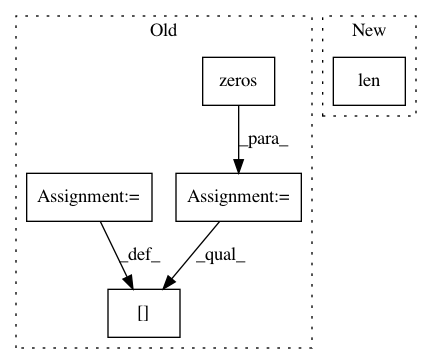

1c1b85686b9744f988d05ecdbaca20c198488e7b,lightning/impl/prank.py,PRank,predict,#PRank#,73
Before Change
def predict(self, X):
n_samples = X.shape[0]
pred = np.zeros(X.shape[0], dtype=int)
for i in xrange(n_samples):
pred[i] = self._predit(X[i])[0]
return self.label_encoder_.inverse_transform(pred)
After Change
n_samples = X.shape[0]
dot = safe_sparse_dot(X, self.coef_)
out = np.zeros(n_samples, dtype=np.int32)
_prank_predict(dot, self.thresholds_, len(self.classes_), out)
return self.label_encoder_.inverse_transform(out)
In pattern: SUPERPATTERN
Frequency: 4
Non-data size: 5
Instances
Project Name: scikit-learn-contrib/lightning
Commit Name: 1c1b85686b9744f988d05ecdbaca20c198488e7b
Time: 2014-06-20
Author: mathieu@mblondel.org
File Name: lightning/impl/prank.py
Class Name: PRank
Method Name: predict
Project Name: craffel/mir_eval
Commit Name: d7df3585734f7d0326d5f854d8f16fe3b3d06373
Time: 2014-04-18
Author: brm2132@columbia.edu
File Name: mir_eval/boundary.py
Class Name:
Method Name: detection
Project Name: interactiveaudiolab/nussl
Commit Name: a0a5505bbae885e0871b4fd3739d36371be234e6
Time: 2015-07-29
Author: fpishdadian@u.northwestern.edu
File Name: KAM.py
Class Name: Kernel
Method Name: genkernel
Project Name: scikit-learn-contrib/imbalanced-learn
Commit Name: aa6af82f458acf3f853e5174d34b11d319eea1c0
Time: 2016-06-17
Author: victor.dvro@gmail.com
File Name: unbalanced_dataset/under_sampling/instance_hardness_threshold.py
Class Name: InstanceHardnessThreshold
Method Name: transform